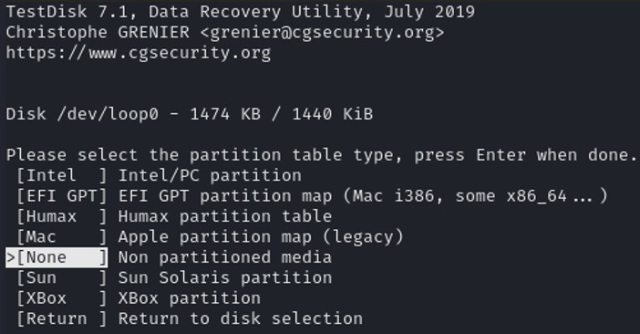

The challenge gives us a file named "floppy.img". The goal of the challenge is to recover the files that have been deleted by mistake.
Mount the disk image:
losetup -f : To find the first unused device
losetup /dev/loop0 ./floopy.img
mkdir ./mountpoint
mount /dev/loop0 ./mountpoint
List the element present in the mountpoint:
Simply by looking at the name, a file seems to be missing, we have IMG_0001.jpg, IMG_0002.jpg, IMG_0004.jpg and IMG_0005.jpg.
Where is IMG_0003.jpg ?
It is potentially the file that has been deleted by accident.
Looking at the hex dump, IMG_003 is found and some data of that file is still present, we also see the date of deletion “2022-05-07”. As long as the data have not been completely overwritten, we might have a chance to recover it.
To recover a file, two methods are possible, use of testdisk or autopsy. Testdisk method will be shown in that write up. Autopsy has a graphical user interface, which makes it easier.
Testdisk
By default, testdisk will attempt to identify the partition table type, usually we want to select a default partition type since testdisk tries to find the correct partition type. In our case, “None” has been chosen.

Once the partition has been chose, click on "list" to list directories and files on the disk.
The color red indicates the deleted files or deleted folder. Press ‘a’ to select all the file and ‘c’ to copy. Choose your destination folder and press ‘c’ to copy.
Once done, you should find the file that has been copied to your destination.
Open the file IMG_0003.jpg and the file is there.
Umount /dev/loop0 : Unmount the device
losetup -d /dev/loop0 : Disconnect the device from the system
And the flag is present in that file.